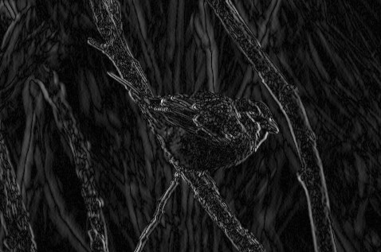
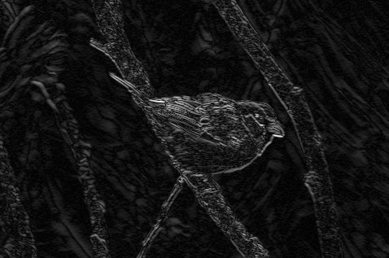
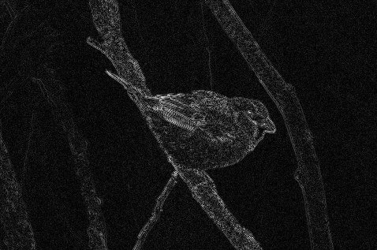
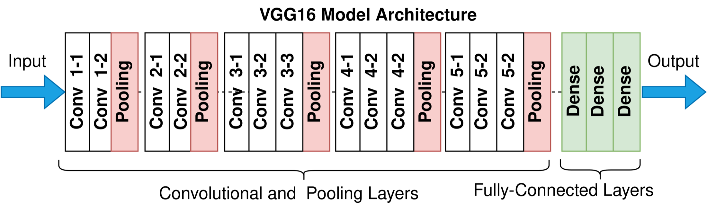

One modest photo, one layer: 30 million weights — each one needing data to learn it.
To recognize a beak, a neuron doesn't need the whole bird — a small window is enough.
So connect neurons to windows, not to every pixel.
An "upper-left beak detector" and a "lower-right beak detector" would do almost the same job.
So make them share one set of weights — one detector, slid everywhere.
One pixel kept out of every twenty: same bird — and the next layer gets far less to process.
This will justify pooling in a few slides.
| −1 | 0 | 1 |
| −2 | 0 | 2 |
| −1 | 0 | 1 |

| −1 | −2 | −1 |
| 0 | 0 | 0 |
| 1 | 2 | 1 |

| 0 | 1 | 0 |
| 1 | −4 | 1 |
| 0 | 1 | 0 |

| 1 | 1 | 1 |
| 1 | 1 | 1 |
| 1 | 1 | 1 |
nn.Conv1d(
in_channels=1, # one raw spectrum
out_channels=8, # 8 filters → 8 maps
kernel_size=15, # window: 15 bins
stride=1,
padding=7, # keep length 6000
)
nn.MaxPool1d(2) # halve: 6000 → 3000
Every argument is a dial you just turned by hand on the 6×6 grid.
Check the padding with the formula:
(6000 − 15 + 14)/1 + 1 = 6000 ✓

The gradient now has a highway straight back through the network — no more vanishing whisper.
Each block only learns a small correction to what flows through.
The CNN backbone is the one you just built. Only the last layers change: instead of one label, predict box positions + confidences.
Names you'll meet: YOLO (fast, one pass) · Faster R-CNN (propose, then verify).
Where a box isn't enough: tumor margins in MS imaging, cell outlines, lesion areas.